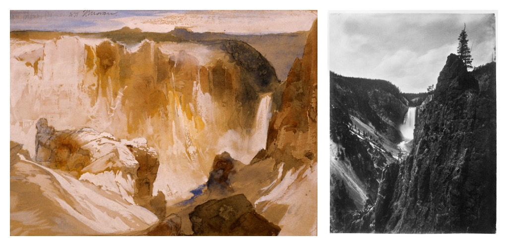
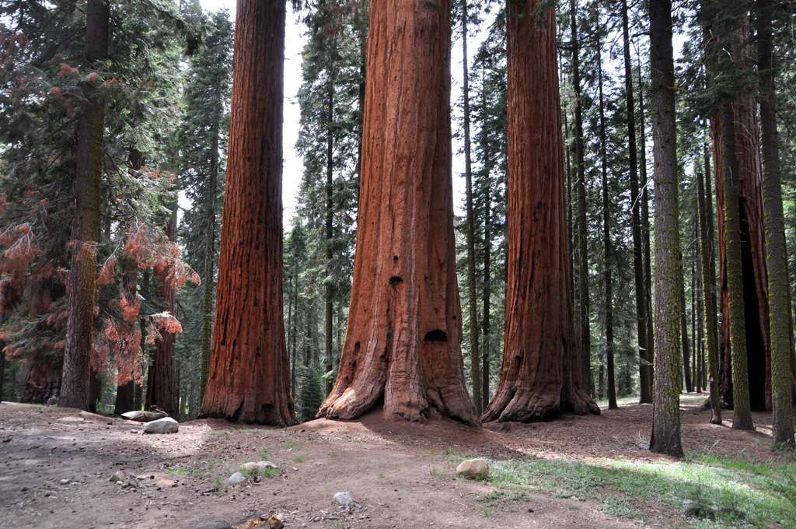

U.S. Code Title 54: National Park Service
Introduction
Title 54 of the United States Code is a collection of laws that govern the National Park Service (NPS). The National Park Service is a federal agency that manages the United States' national parks and was created by the Organic Act of 1916.
Title 54's topics include:
- the establishment and administration of the national park system
- the protection of national monuments
- the conservation of federal land, its animals, and its resources
- the preservation of Native American sites
- the coordination of outdoor recreation programs
- other organizations and programs related to national history
Codification
The original code dates back to August 25th, 1916, when President Woodrow Wilson signed the Organic Act. The Organic Act established a federal agency called the National Park Service that was able to promote and regulate national parks, monuments, and reservations in order to conserve them unimpaired for the enjoyment of future generations.
On October 15th, 1966, Title 16 codified the legal framework for implementing the Organic Act. Over the decades, Title 16 became difficult to navigate due to its length and disorganization. Title 54 reorganized its provisions and included additional laws about other land management and federal agencies. This change made it easier to reference laws concerning the National Park Service.
Title 54 was established on December 19th, 2014, and reorganized Title 16's conservation laws with some small changes.
Importance
Title 54 outlines how the United States government preserves its land and resources for future generations. Since 1916, the National Park Service has played a vital role in regulating these resources individually and collectively and has grown to include areas in all 50 states.
Today, approximately 20,000 employees and more than 279,000 volunteers across the United States work for the NPS in 12 unified regions. There are a total of 424 parks that cover more than 85 million acres.
The NPS also assists in the cleanup of hazardous incidents, the development of state-of-the-art social science, the implementation of information technology for monitoring federal land, and auditing other federal agencies for their environmental impacts.
Without Title 54, it would be difficult to protect our country's natural beauty on a nationwide scale.
History
The first national park was Yellowstone National Park. It was established on March 1st, 1872, when President Ulysses S. Grant signed the Yellowstone National Park Protection Act. This act was a drastic change from the previously established policy of transferring public lands to private ownership because it protected Yellowstone from private development. The Hayden Expedition of 1871 was instrumental to the act's passing. Just six months after the expedition's return, the awe-inspiring images of Yellowstone by the artist Thomas Moran and the photographer William Henry Jackson moved the hearts of the American people. These images helped convince Congress that Yellowstone needed to be protected.
The founding of the National Park Service is attributed to John Muir due to his influential publications in the late 1800s that lead to the establishment of Sequoia (1890), Yosemite (1890), Mount Rainier (1899), and Grand Canyon (1908) National Parks. John Muir was a self-taught conservationist that considered himself to be a lifetime student of "the University of the Wilderness." He was an immigrant from Scotland that became enthralled with the natural beauty of California. Muir argued for the preservation of national resources for over two decades until his message was heard by President Lyndon B. Johnson. Subsequently, the U.S. Congress established the Sequoia National Park on September 25th, 1890, which became our country's second national park. Today, John Muir is credited as "The Father of Our National Park System."
The Hayden Expedition showed us the first glimpse of our land's natural beauty in an age where we could not travel by car or plane, and John Muir taught us how to take care of it.
